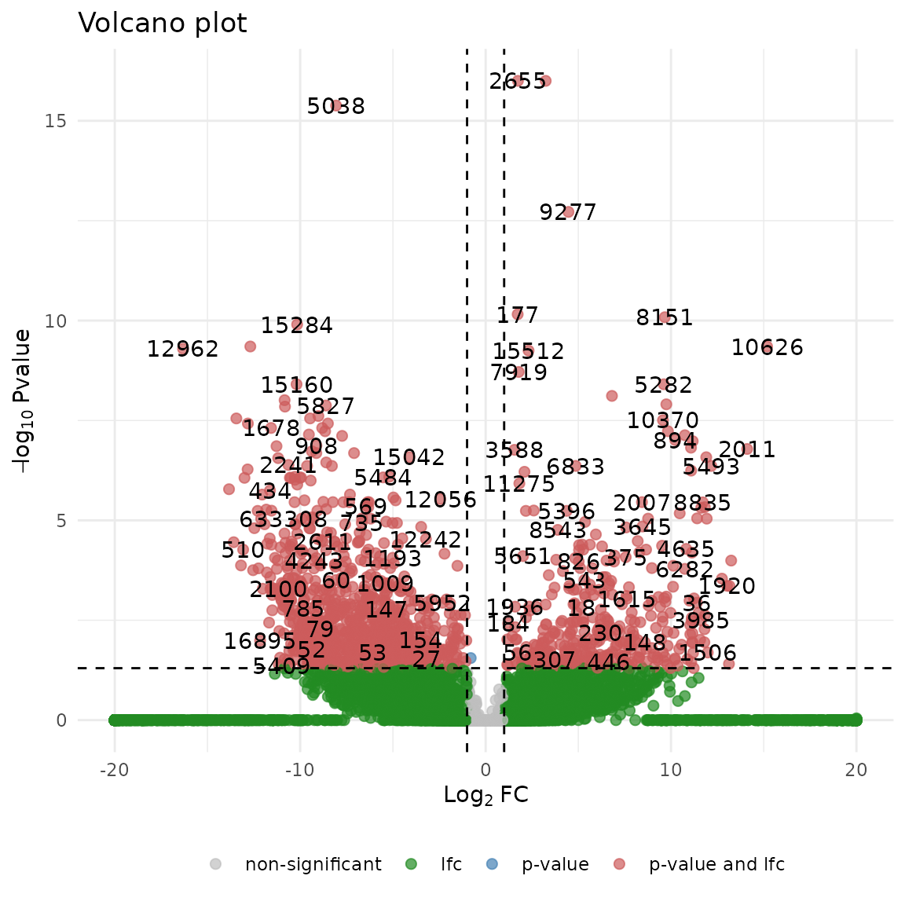

library(devil)
library(scRNAseq)
#> Loading required package: SingleCellExperiment
#> Loading required package: SummarizedExperiment
#> Loading required package: MatrixGenerics
#> Loading required package: matrixStats
#>
#> Attaching package: 'MatrixGenerics'
#> The following objects are masked from 'package:matrixStats':
#>
#> colAlls, colAnyNAs, colAnys, colAvgsPerRowSet, colCollapse,
#> colCounts, colCummaxs, colCummins, colCumprods, colCumsums,
#> colDiffs, colIQRDiffs, colIQRs, colLogSumExps, colMadDiffs,
#> colMads, colMaxs, colMeans2, colMedians, colMins, colOrderStats,
#> colProds, colQuantiles, colRanges, colRanks, colSdDiffs, colSds,
#> colSums2, colTabulates, colVarDiffs, colVars, colWeightedMads,
#> colWeightedMeans, colWeightedMedians, colWeightedSds,
#> colWeightedVars, rowAlls, rowAnyNAs, rowAnys, rowAvgsPerColSet,
#> rowCollapse, rowCounts, rowCummaxs, rowCummins, rowCumprods,
#> rowCumsums, rowDiffs, rowIQRDiffs, rowIQRs, rowLogSumExps,
#> rowMadDiffs, rowMads, rowMaxs, rowMeans2, rowMedians, rowMins,
#> rowOrderStats, rowProds, rowQuantiles, rowRanges, rowRanks,
#> rowSdDiffs, rowSds, rowSums2, rowTabulates, rowVarDiffs, rowVars,
#> rowWeightedMads, rowWeightedMeans, rowWeightedMedians,
#> rowWeightedSds, rowWeightedVars
#> Loading required package: GenomicRanges
#> Loading required package: stats4
#> Loading required package: BiocGenerics
#>
#> Attaching package: 'BiocGenerics'
#> The following objects are masked from 'package:stats':
#>
#> IQR, mad, sd, var, xtabs
#> The following objects are masked from 'package:base':
#>
#> anyDuplicated, aperm, append, as.data.frame, basename, cbind,
#> colnames, dirname, do.call, duplicated, eval, evalq, Filter, Find,
#> get, grep, grepl, intersect, is.unsorted, lapply, Map, mapply,
#> match, mget, order, paste, pmax, pmax.int, pmin, pmin.int,
#> Position, rank, rbind, Reduce, rownames, sapply, setdiff, table,
#> tapply, union, unique, unsplit, which.max, which.min
#> Loading required package: S4Vectors
#>
#> Attaching package: 'S4Vectors'
#> The following object is masked from 'package:utils':
#>
#> findMatches
#> The following objects are masked from 'package:base':
#>
#> expand.grid, I, unname
#> Loading required package: IRanges
#> Loading required package: GenomeInfoDb
#> Loading required package: Biobase
#> Welcome to Bioconductor
#>
#> Vignettes contain introductory material; view with
#> 'browseVignettes()'. To cite Bioconductor, see
#> 'citation("Biobase")', and for packages 'citation("pkgname")'.
#>
#> Attaching package: 'Biobase'
#> The following object is masked from 'package:MatrixGenerics':
#>
#> rowMedians
#> The following objects are masked from 'package:matrixStats':
#>
#> anyMissing, rowMediansLet’s load a single-cell RNA dataset from the scRNAseq
package.
data <- scRNAseq::ReprocessedFluidigmData()In order to obtain a devil fit you will need the RNA counts and the metadata describing the single cells’ features.
counts <- data@assays@data[[1]]
metadata <- data@colData
print(dim(counts))
#> [1] 26255 130
print(dim(metadata))
#> [1] 130 28
print(head(metadata))
#> DataFrame with 6 rows and 28 columns
#> NREADS NALIGNED RALIGN TOTAL_DUP PRIMER INSERT_SZ
#> <numeric> <numeric> <numeric> <numeric> <numeric> <numeric>
#> SRR1275356 10554900 7555880 71.5862 58.4931 0.0217638 208
#> SRR1274090 196162 182494 93.0323 14.5122 0.0366826 247
#> SRR1275251 8524470 5858130 68.7213 65.0428 0.0351827 230
#> SRR1275287 7229920 5891540 81.4884 49.7609 0.0208685 222
#> SRR1275364 5403640 4482910 82.9609 66.5788 0.0298284 228
#> SRR1275269 10729700 7806230 72.7536 50.4285 0.0204349 245
#> INSERT_SZ_STD COMPLEXITY NDUPR PCT_RIBOSOMAL_BASES
#> <numeric> <numeric> <numeric> <numeric>
#> SRR1275356 63 0.868928 0.343113 2e-06
#> SRR1274090 133 0.997655 0.935730 0e+00
#> SRR1275251 89 0.789252 0.201082 0e+00
#> SRR1275287 78 0.898100 0.538191 0e+00
#> SRR1275364 76 0.890693 0.391660 0e+00
#> SRR1275269 99 0.879414 0.431169 0e+00
#> PCT_CODING_BASES PCT_UTR_BASES PCT_INTRONIC_BASES
#> <numeric> <numeric> <numeric>
#> SRR1275356 0.125806 0.180954 0.613229
#> SRR1274090 0.309822 0.412917 0.205185
#> SRR1275251 0.398461 0.473884 0.039886
#> SRR1275287 0.196420 0.227592 0.498944
#> SRR1275364 0.138617 0.210406 0.543941
#> SRR1275269 0.333077 0.354635 0.248331
#> PCT_INTERGENIC_BASES PCT_MRNA_BASES MEDIAN_CV_COVERAGE
#> <numeric> <numeric> <numeric>
#> SRR1275356 0.080008 0.306760 1.495770
#> SRR1274090 0.072076 0.722739 1.007580
#> SRR1275251 0.087770 0.872345 1.242990
#> SRR1275287 0.077044 0.424013 0.775981
#> SRR1275364 0.107035 0.349024 1.441370
#> SRR1275269 0.063957 0.687712 0.617100
#> MEDIAN_5PRIME_BIAS MEDIAN_3PRIME_BIAS MEDIAN_5PRIME_TO_3PRIME_BIAS
#> <numeric> <numeric> <numeric>
#> SRR1275356 0.000000 0.166122 1.036250
#> SRR1274090 0.181742 0.698991 0.293510
#> SRR1275251 0.000000 0.340046 0.201518
#> SRR1275287 0.010251 0.350915 0.292838
#> SRR1275364 0.000000 0.204074 0.619863
#> SRR1275269 0.057960 0.345502 0.284480
#> sample_id.x Lane_ID LibraryName avgLength spots
#> <character> <character> <character> <integer> <integer>
#> SRR1275356 SRX534610 D24VYACXX130502:4 GW16_2 202 9818076
#> SRR1274090 SRX534823 1 NPC_9 60 95454
#> SRR1275251 SRX534623 D24VYACXX130502:4 GW16_8 202 7935952
#> SRR1275287 SRX534641 D24VYACXX130502:1 GW21+3_2 202 6531944
#> SRR1275364 SRX534614 D24VYACXX130502:7 GW16_23 202 4919561
#> SRR1275269 SRX534632 D24VYACXX130502:4 GW21_8 202 9969377
#> Biological_Condition Coverage_Type Cluster1 Cluster2
#> <character> <character> <factor> <factor>
#> SRR1275356 GW16 High IIIb III
#> SRR1274090 NPC Low 1a I
#> SRR1275251 GW16 High NA III
#> SRR1275287 GW21+3 High 1c I
#> SRR1275364 GW16 High IIIb III
#> SRR1275269 GW21 High NA I
colnames(metadata)
#> [1] "NREADS" "NALIGNED"
#> [3] "RALIGN" "TOTAL_DUP"
#> [5] "PRIMER" "INSERT_SZ"
#> [7] "INSERT_SZ_STD" "COMPLEXITY"
#> [9] "NDUPR" "PCT_RIBOSOMAL_BASES"
#> [11] "PCT_CODING_BASES" "PCT_UTR_BASES"
#> [13] "PCT_INTRONIC_BASES" "PCT_INTERGENIC_BASES"
#> [15] "PCT_MRNA_BASES" "MEDIAN_CV_COVERAGE"
#> [17] "MEDIAN_5PRIME_BIAS" "MEDIAN_3PRIME_BIAS"
#> [19] "MEDIAN_5PRIME_TO_3PRIME_BIAS" "sample_id.x"
#> [21] "Lane_ID" "LibraryName"
#> [23] "avgLength" "spots"
#> [25] "Biological_Condition" "Coverage_Type"
#> [27] "Cluster1" "Cluster2"You can see that we have 130 cells described by 28 features along with the counts of 26255 genes. We remove the non-expressed genes.
We remain with ~17k genes. Now we need to produce so called
design_matrix which is a matrix that contains a row per
cell and each row contains some of the cell features. To do so, the
simplest way is to use the model.matrix function, which
requires a formula and the metadata as input.
design_matrix <- model.matrix(~Biological_Condition, data = metadata)
print(unique(metadata$Biological_Condition))
#> [1] "GW16" "NPC" "GW21+3" "GW21"
head(design_matrix)
#> (Intercept) Biological_ConditionGW21 Biological_ConditionGW21+3
#> SRR1275356 1 0 0
#> SRR1274090 1 0 0
#> SRR1275251 1 0 0
#> SRR1275287 1 0 1
#> SRR1275364 1 0 0
#> SRR1275269 1 1 0
#> Biological_ConditionNPC
#> SRR1275356 0
#> SRR1274090 1
#> SRR1275251 0
#> SRR1275287 0
#> SRR1275364 0
#> SRR1275269 0In this case we model each cell considering its
Biological_Condition. In our case, the intercept represent
the “GW16” condition.
We are now ready to use the fit_devil function.
fit <- devil::fit_devil(as.matrix(counts), design_matrix, overdispersion = T, size_factors = T, verbose = T, parallel.cores = 1, min_cells = 100, avg_counts = 10)
#> Removing 16492 lowly expressed genes.
#> Compute size factors
#> Initialize beta estimate
#> Fit beta coefficients
#> Fit overdispersionThe obtained fit contains, along with additional values:
beta : matrix of coefficients (n_genes x
n_features)overdispersion : vector of coefficients (n_genes)In order to test the data you need to specify your null hypothesis using a contrast vector . Considering a gene along with its inferred coefficient , the null hypothesis is usually defined as
For example, if you are interested in the genes that are differentially expressed between the “GW21” and the “NPC” condition, you need to find the genes for which we strongly reject the null hypothesis
$$ \beta_{GW21} = \beta_{NPC} \hspace{5mm}
\rightarrow \hspace{5mm} \beta_{GW21} - \beta_{NPC} = 0$$ which
is equivalent to defining the contrast vector
.
Once the contrast vector is defined, you can test the null hypothesis
using the test_de function.
contrast <- c(0, 1, 0, -1)
test_res <- devil::test_de(fit, contrast, max_lfc = Inf)
if (!('name' %in% colnames(test_res))) {
test_res$name <- as.character( 1:nrow(test_res) )
}
colnames(test_res)
#> [1] "pval" "adj_pval" "lfc" "name"The results contains, for each gene
pval : p-value associated with the statistical
testadj_pval : p-value corrected considering multiple
testinglfc : log2 fold change of gene expression between the
tested conditionsYou can also visualize the results using the
EnhancedVolcano package
devil::plot_volcano(test_res, lfc_cut = 1, pval_cut = .05, labels = TRUE, point_size = 2)